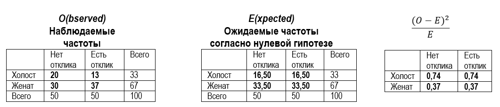
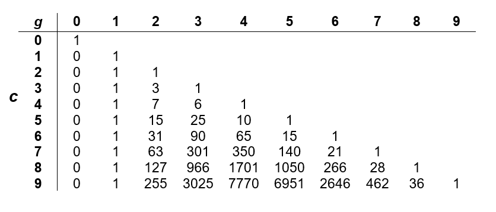
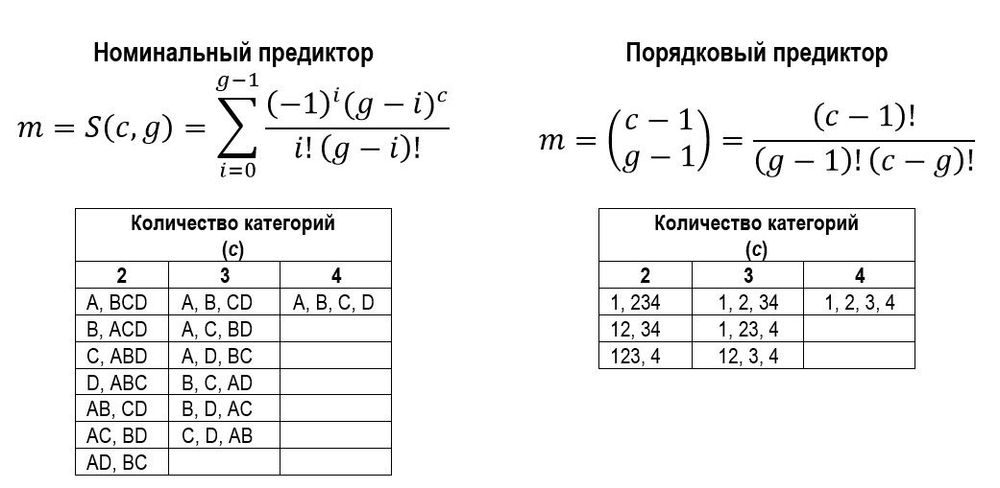
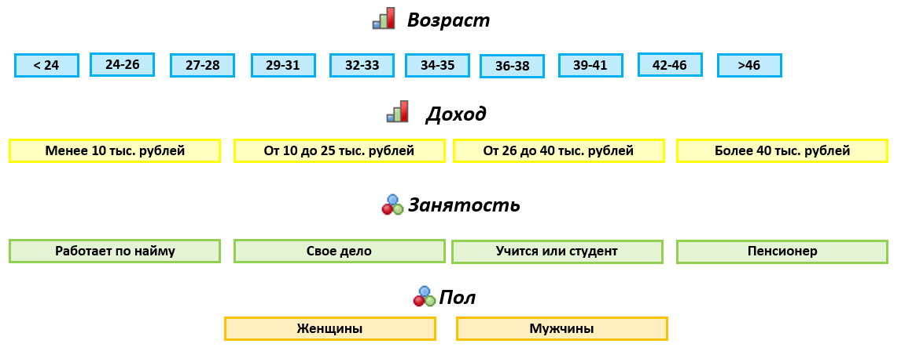
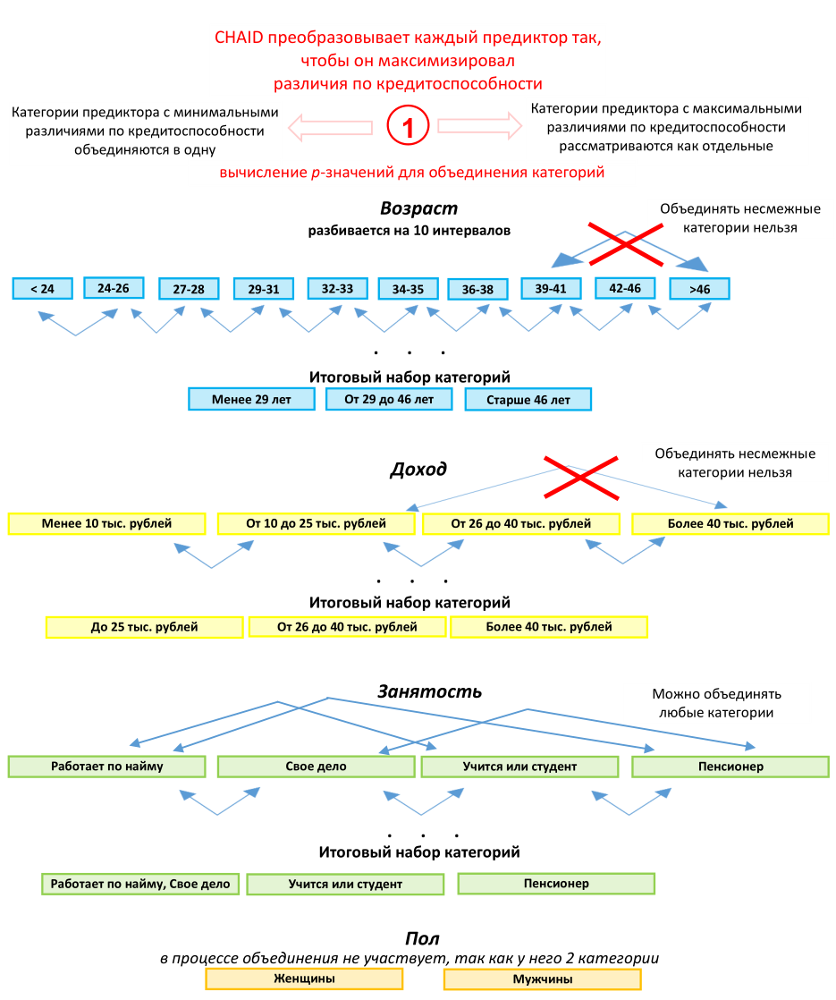
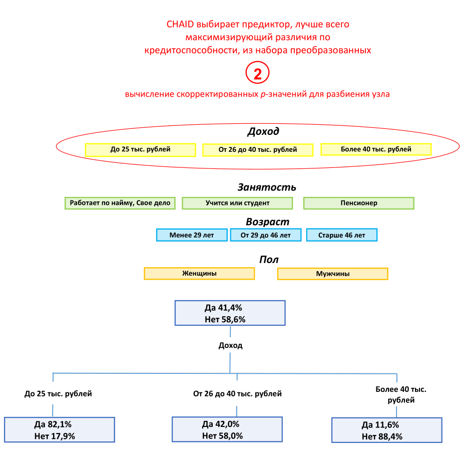
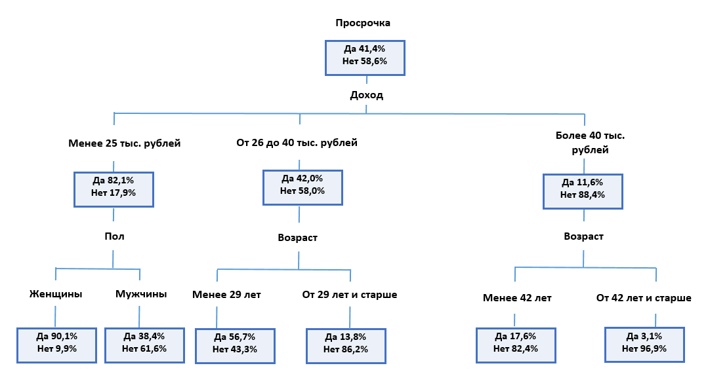
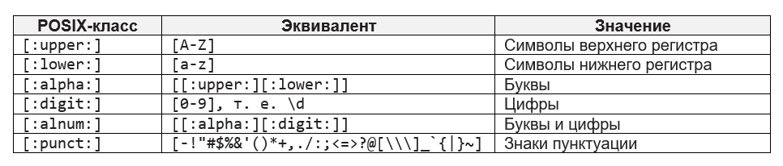
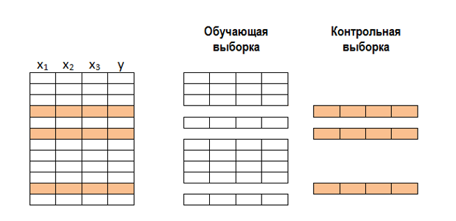

2 Построение деревьев решений CHAID с помощью пакета R CHAID
2.1 Знакомство с методом CHAID
2.1.1 Описание алгоритма
Перед началом работы алгоритма CHAID необходимо преобразовать все имеющиеся количественные предикторы в порядковые переменные. Обычно их разбивают на 10 категорий одинакового объема.
Алгоритм приступает к построению дерева, итеративно применяя к каждому узлу, начиная с корневого, процедуры объединения категорий, расщепления узла и проверки правил остановки.
Этап 1. Объединение категорий
1. Для каждого предиктора с числом категорий больше двух6 алгоритм ищет пару категорий с наименее значимыми различиями по зависимой переменной, т.е. пару категорий, для которых после применения соответствующего статистического критерия получено наибольшее p-значение. Выбор статистического критерия определяется типом шкалы зависимой переменной. Для номинальной зависимой переменной используется критерий хи-квадрат Пирсона. Алгоритм строит двухвходовую таблицу сопряженности с категориями предиктора в качестве строк и категориями зависимой переменной в качестве столбцов. Он проверяет нулевую гипотезу о том, что категории предиктора не отличаются друг от друга с точки зрения распределения категорий зависимой переменной. Для количественной зависимой переменной используется F-критерий. Алгоритм осуществляет однофакторный дисперсионный анализ и проверяет нулевую гипотезу о том, что средние значения зависимой переменной для различных категорий предиктора не различаются между собой.
ПРИМЕЧАНИЕ
Пакет R CHAID позволяет работать только с категориальной зависимой переменной. Возможность работы с количественной зависимой переменной реализована в процедуре Деревья классификации/CHAID проприетарного программного пакета IBM SPSS Statistics и питоновском пакете CHAID.
2. Найдя наибольшее p-значение для пары категорий, алгоритм сравнивает его с заданным уровнем значимости для объединения категорий.
Если p-значение:
меньше или равно заданному уровню значимости для объединения категорий – алгоритм переходит к вычислению скорректированных p-значений для полученного набора категорий (шаг 3);
больше уровня значимости для объединения категорий – эта пара объединяется в отдельную составную категорию, в результате формируется новый набор категорий предиктора и процесс начинается заново с поиска пары категорий с наибольшим p-значением.
ПРИМЕЧАНИЕ
В пакете R CHAID уровень значимости для объединения категорий можно задать c помощью параметра alpha2 вспомогательной функции chaid_control().
(Опциональный шаг) Если новая составная категория состоит из трех и более исходных категорий, алгоритм находит внутри этой составной категории наилучшее бинарное расщепление, которое дает наименьшее p-значение. Алгоритм выполняет бинарное расщепление, если его p-значение не превышает уровня значимости для разбиения объединенных категорий.
ПРИМЕЧАНИЕ
В пакете R CHAID уровень значимости для разбиения уже объединенных категорий можно настроить c помощью параметра alpha3 вспомогательной функции chaid_control().
3. Получив сформированный набор категорий предиктора, алгоритм для категориальной зависимой переменной вновь строит двухвходовую таблицу сопряженности с категориями предиктора в качестве строк и категориями зависимой переменной в качестве столбцов, а для количественной зависимой переменной вновь выполняет однофакторный дисперсионный анализ. В результате алгоритм вычисляет скорректированное p-значение критерия хи-квадрат или F-критерия как исходное p-значение, умноженное на поправку Бонферонни. Поправка Бонферрони представляет собой корректировку уровня значимости в зависимости от числа возможных способов, с помощью которых исходные категории предиктора могут быть объединены в итоговые категории.
Этап 2. Расщепление узла
После вычисления скорректированных p-значений для итоговых наборов категорий по всем предикторам алгоритм переходит к этапу расщепления узла.
1. На этапе расщепления алгоритм выбирает, какой предиктор обеспечит наилучшее разбиение узла. Для этого предиктор должен иметь наименьшее скорректированное p-значение (т.е. должен являться наиболее статистически значимым).
2. Найдя предиктор с наименьшим скорректированным p-значением, алгоритм сравнивает его с заданным уровнем значимости для расщепления.
Если p-значение:
меньше или равно заданному уровню значимости для расщепления – алгоритм разбивает узел с использованием данного предиктора;
больше заданного уровня значимости для расщепления, то алгоритм не расщепляет узел и узел рассматривается как терминальный.
ПРИМЕЧАНИЕ
В пакете R CHAID уровень значимости для расщепления узла можно настроить c помощью параметра alpha4 вспомогательной функции chaid_control().
Этап 3. Остановка
Алгоритм проверяет, нужно ли прекратить построение дерева, в соответствии со следующими правилами остановки:
Если узел стал однородным, то есть все наблюдения в узле имеют одинаковые значения зависимой переменной, узел не разбивается.
Если текущая глубина дерева достигает заданной пользователем максимальной глубины дерева, процесс построения дерева останавливается.
Если количество наблюдений в родительском узле меньше заданного пользователем минимума наблюдений в родительском узле, узел не разбивается.
Если минимальное абсолютное количество наблюдений в терминальном узле меньше заданного пользователем минимума наблюдений в терминальном узле, узел не разбивается.
Если минимальная относительная частота наблюдений в терминальном узле меньше заданной пользователем минимальной относительной частоты наблюдений в терминальном узле, узел не разбивается.
ПРИМЕЧАНИЕ
В пакете R CHAID с помощью ряда параметров вспомогательной функции chaid_control() можно изменить некоторые вышеперечисленные правила остановки:
minsplitзадает минимальное количество наблюдений в родительском узле перед расщеплением, по умолчанию 20;minbucketзадает минимальное абсолютное количество наблюдений в терминальном узле, по умолчанию 7;minprobзадает минимальную относительную частоту наблюдений в терминальном узле, по умолчанию 0.01;maxheightзадает максимальную высоту или глубину дерева (количество уровней дерева, лежащих ниже корневого узла), по умолчанию равен -1, т.е. ограничение отсутствует.
2.1.2 Немного о критерии хи-квадрат
Предположим, на этапе объединения алгоритм проверяет, различаются ли значимо две категории предиктора Семейное положение “Холост” и “Женат” по зависимой переменной Отклик. Нулевая гипотеза звучит так: категории предиктора не отличаются друг от друга с точки зрения распределения категорий зависимой переменной. Альтернативная гипотеза заключается в том, что категории предиктора все же отличаются друг от друга по зависимой переменной. Строится двухвходовая таблица сопряженности, где строки являются категориями предиктора Семейное положение, а столбцы – категориями зависимой переменной Отклик. Для каждой ячейки таблицы фиксируем наблюдаемую частоту. Затем для каждой ячейки фиксируем ожидаемую частоту согласно нулевой гипотезе. В итоге для каждой ячейки вычисляем квадрат разности между наблюдаемой и ожидаемой частотой, поделенный на ожидаемую частоту. Складываем результаты, вычисленные по каждой ячейке, и получаем значение хи-квадрат (\(\chi^{2}\)). Процесс вычисления хи-квадрат проиллюстрирован на рис. 2.1.

Рис. 2.1. Процесс вычисления значения хи-квадрат
\[\chi^{2}=\sum\frac{(O-E)^2}{E},\] где
\(O\) – наблюдаемые частоты;
\(E\) – ожидаемые частоты.
\[\chi^{2}=\frac{(20-16,5)^2}{16,5} + \frac{(13-16,5)^2}{16,5} + \frac{(30-33,5)^2}{33,5} + \frac{(37-33,5)^2}{33,5}=2,216\] Статистика хи-квадрат подчиняется распределению хи-квадрат со степенями свободы \(df=(R–1)(C–1)\), где \(R\) и \(C\) – количество строк и столбцов в таблице сопряженности. В нашем случае количество степеней свободы будет равно \(df=(2–1)(2–1)=1\).
Чтобы выяснить, достаточно ли велико полученное значение хи-квадрат для отклонения нулевой гипотезы, вычисляем соответствующую ему p-значение. p-значение – это вероятность ошибки, заключающейся в отклонении нулевой гипотезы, когда она верна. Это вероятность того, что случайная величина, имеющая распределение хи-квадрат при условии верности нулевой гипотезы, примет значение, не меньшее, чем вычисленное значение хи-квадрат. Решение об отклонении нулевой гипотезы принимается в результате сравнения p-значения с определенным пороговым уровнем, который называют уровнем значимости (\(\alpha\)). Обычно p-значение сравнивают с общепринятым стандартным уровнем значимости\(\alpha=0,05\). Если найденное p-значение меньше уровня значимости, нулевую гипотезу отклоняют, в противном случае у нас нет оснований отвергнуть нулевую гипотезу.
В нашем случае значение хи-квадрат 2,216 с одной степенью свободы соответствует р-значению 0,1366. Таким образом, вероятность того, что статистика хи-квадрат примет вычисленное значение 2,216 и выше, когда категории предиктора Семейное положение не отличаются друг от друга с точки зрения распределения категорий зависимой переменной Отклик, составляет 0,1366. Это превышает уровень значимости 0,05. У нас нет оснований отвергнуть нулевую гипотезу. Можно сделать вывод, что категории переменной Семейное положение действительно не отличаются друг от друга с точки зрения распределения неоткликнувшихся и откликнувшихся клиентов. Данные категории предиктора можно объединить.
Обратите внимание, фраза «нет оснований отклонить нулевую гипотезу» не тождественна фразе «принять нулевую гипотезу», которая является неверной. Нулевая гипотеза обычно имеет очень конкретную формулировку. Например, она может звучит так: нет разницы между средним значением выборки №1 и выборки №2. Если мы не можем отклонить нулевую гипотезу, значит ли это, что данные значения равны? Вовсе не обязательно. То, что нам не удалось найти статистически значимой разницы, совершенно не означает, что мы доказали равенство двух величин. Кроме того, результаты применения статистических критериев зависят от величины различий и от размера выборки, и одинаковые различия на выборках разного размера могут оказаться в одном случае незначимыми (например, если есть две выборки по 20 наблюдений), а в другом (когда наблюдений будет по 1000) – значимыми на том же уровне значимости. Таким образом, мощность статистического критерия (способность выявлять различия там, где они есть) зависит от объема выборки.
Важным практическим моментом в построении деревьев по методу CHAID является то, что по мере роста дерева в узлах остается все меньше и меньше наблюдений, и на определенном этапе мы теряем возможность провести очередное разделение просто в силу малого числа наблюдений в узле. Даже если такое деление могло бы улучшить качество модели на обучающей выборке, оно не будет произведено, если мы не сможем отклонить нулевую гипотезу на заданном уровне значимости; использование поправки Бонферрони только усугубляет эту ситуацию (см. ниже). Но это нельзя однозначно рассматривать как недостаток метода, поскольку описанная особенность является своего рода встроенной регуляризацией, которая может повысить обобщающую способность модели.
2.1.3 Немного об F-критерии
Предположим, на этапе объединения категорий алгоритм проверяет, различаются ли значимо категории предиктора Семейное положение “Холост” и “Женат” по количественной зависимой переменной Доход. Нулевая гипотеза будет звучат так: средние значения зависимой переменной в категориях предиктора или группах одинаковы. Чтобы проверить ее, нужно ответить на два вопроса: насколько сильно значения отклоняются от среднего значения зависимой переменной в группах и насколько сильно средние значения зависимой переменной в группах отличаются от среднего значения зависимой переменной перед разбиением на группы. Соответственно выполняется однофакторный дисперсионный анализ, в ходе которого подсчитывают внутригрупповую сумму квадратов отклонений и межгрупповую сумму квадратов отклонений и вычисляют F-критерий (критерий Фишера).
Сумма квадратов между группами (дочерними узлами) определяется по формуле:
Предположим, на этапе объединения категорий алгоритм проверяет, различаются ли значимо категории предиктора Семейное положение Холост и Женат по количественной зависимой переменной Доход. Нулевая гипотеза будет звучат так: средние значения зависимой переменной в категориях предиктора или группах одинаковы. Чтобы проверить ее, нужно ответить на два вопроса: насколько сильно значения отклоняются от среднего значения зависимой переменной в группах и насколько сильно средние значения зависимой переменной в группах отличаются от среднего значения зависимой переменной перед разбиением на группы. Соответственно выполняется однофакторный дисперсионный анализ, в ходе которого подсчитывают внутригрупповую сумму квадратов отклонений и межгрупповую сумму квадратов отклонений и вычисляют F-критерий (критерий Фишера). Сумма квадратов между группами (дочерними узлами) определяется по формуле:
\[SS_{межгрупп}=\sum^{B}_{i=1}n_i(\bar{y}_{i.}-\bar{y}_{..})^2,\]
где
\(\bar{y}_{i.}\) – среднее значение зависимой переменной в \(i\)-том дочернем узле;
\(\bar{y}_{..}\) – среднее значение зависимой переменной в родительском узле.
Сумма квадратов внутри групп (дочерних узлов) определяется по формуле:
\[SS_{внутригрупп}=\sum^{B}_{i=1}\sum^{n_i}_{j=1}n_i(y_{ij}-\bar{y}_{i.})^2,\]
где
\(y_{ij}\) – значение зависимой переменной для \(j\)-ого наблюдения в \(i\)-том дочернем узле;
\(\bar{y}_{i.}\) – среднее значение зависимой переменной в \(i\)-том дочернем узле.
Общая сумма квадратов отклонений имеет вид
\[SS_{общая}=\sum^{B}_{i=1}\sum^{n_i}_{j=1}n_i(y_{ij}-\bar{y}_{..})^2\]
F-критерий – это отношение межгрупповой суммы квадратов отклонений к внутригрупповой:
\[F=frac_{S_{межгрупп}}{S_{внутригрупп}} \sim F(B-1, n-B)\]
Эта статистика подчиняется F-распределению с \(B – 1\) и \(n – B\) степенями свободы согласно нулевой гипотезе.
p-значение – это вероятность того, что случайная величина с распределением Фишера при условии верности нулевой гипотезы примет значение, не меньшее, чем фактическое значение статистики. Допустим, для нашего примера мы получили значение F-теста 15,943, соответствующее р-значению 0,000. Вероятность того, что F-статистика примет фактическое значение 15,943 и выше, когда средние значения зависимой переменной в категориях предиктора одинаковы, составляет <0,001. Это меньше уровня значимости 0,05. Мы можем отклонить нулевую гипотезу и сделать вывод, что средние значения зависимой переменной в категориях предиктора неодинаковы, а межгрупповые различия являются более существенными, чем внутригрупповые. Данные категории предиктора объединять нельзя.
2.1.4 Способы объединения категорий предикторов
Способ объединения категорий предиктора зависит от шкалы его измерения. В номинальных предикторах можно объединять любые категории, если они не различаются значимо по зависимой переменной. Таким образом, для номинальных переменных ограничения на объединение категорий не накладываются.
В порядковых предикторах две категории могут быть объединены, только если к ним могут быть присоединены промежуточные категории. Например, переменная, представляющая группы по уровню доходов, может рассматриваться как порядковая. Людей с доходом менее 2000$ имеет смысл объединять с теми, кто зарабатывает более 3000$, только если к вновь образовавшейся группе можно также отнести людей с доходом от 2000$ до 3000$.
2.1.5 Поправка Бонферрони
Осуществляя поиск незначимых категорий предиктора для объединения, CHAID выполняет большое количество статистических тестов для различных комбинаций категорий предиктора. Однако число таких комбинаций зависит от количества категорий, которое у каждой переменной разное.
Осуществляя поиск незначимых категорий предиктора для объединения, CHAID выполняет большое количество статистических тестов для различных комбинаций категорий предиктора. Однако число таких комбинаций зависит от количества категорий, которое у каждой переменной разное. Например, по одной переменной может оцениваться 2 варианта объединения, рассматриваться 2 таблицы сопряженности и выполняться 2 статистических теста, а по другой переменной – 6 вариантов объединения, 6 таблиц сопряженности и 6 статистических тестов. Вероятность того, что из 6 тестов хи-квадрат для второй переменной по крайней мере один из тестов дает ложное отклонение нулевой гипотезы составляет \(1-\prod^{6}_{i=1}(1-\alpha_i)\).
Групповая вероятность ошибки намного больше индивидуальной вероятности ошибки \(\alpha_i\). Например, если индивидуальная вероятность ошибки (\(\alpha_i\)) по каждому тесту равна 0,05, то групповая вероятность ошибки составит \(1–0,956 = 0,265\). Таким образом, при осуществлении множественных проверок гипотез при помощи критерия хи-квадрат (одна проверка на каждое возможное объединение), р-значения недооценивают риск отклонения нулевой гипотезы, когда она верна. Эти рассуждения справедливы и для других статистических критериев. Например, вы можете сделать ошибочный вывод, что заемщики с разными профессиями отличаются по кредитоспособности, тогда как они на самом деле не отличаются.
Если мы хотим, чтобы групповая вероятность ошибки при этом не превышала определенный уровень значимости \(\alpha\) (например, 0,05), то, согласно методу Бонферрони, мы должны умножить каждое полученное p-значение на \(m\) – количество возможных вариантов объединения с исходных категорий предиктора в \(g\) итоговых категорий, получить скорректированное p-значение и сравнить его с уровнем значимости \(\alpha\). Для номинального предиктора множитель \(m\) определяется числом Стирлинга второго рода:
\[m=S(c, g) = \sum^{g-1}_{i=1}\frac{(-1)^i(g-i)^c}{i!(g-i)!}\]
На рис. 2.2 приводится таблица значений чисел Стирлинга при \(0≤c\), \(g≤9\).

Риc. 2.2. Таблица значений чисел Стерлинга при \(0≤c\), \(g≤9\)
Для порядкового предиктора множитель \(m\) определяется как
\[m=\begin{pmatrix}c-1 \\g-1\end{pmatrix}=\frac{(c-1)!}{(g-1)!(c-g)!}\] Допустим, у нас есть три предиктора. Первый – номинальный предиктор Сlass с 8 категориями. Второй – номинальный предиктор Type с 5 категориями. Третий – порядковый предиктор Incomecat c 4 категориями. По завершении этапа объединения Сlass был преобразован в предиктор с тремя итоговыми категориями, и для него было вычислено p-значение 0,00001; Type был преобразован в предиктор с двумя итоговыми категориями, и для него было вычислено p-значение 0,009; Incomecat был преобразован в предиктор с тремя итоговыми категориями и получил p-значение 0,003. Множитель для предиктора Class равен \(m=S(8, 3)=\frac{1}{6}(3^8-3\times2^8+3)=966\). Таким образом, наше p-значение 0,00001 умножается на 966, и мы получаем скорректированное p-значение 0,00966. Множитель для предиктора Type равен \(m=S(5, 2)=2^4-1=15\). Наше p-значение 0,009 умножается на 15, и мы получаем скорректированное p-значение 0,135. Множитель для предиктора Incomecat равен \(m=\frac{(4-1)!}{(3-1)!(4-3)!}=\frac{3!}{2!\times1!}=\frac{6}{2}=3\). p-значение 0,003 умножается на 3, и мы получаем скорректированное p-значение 0,009. Для разбиения узла выбирается предиктор Incomecat, который имеет наименьшее скорректированное p-значение 0,009.

Риc. 2.3. Количество возможных разбиений переменной из 4 категорий на 2, 3, 4 группы
2.1.6 XCHAID
В 1991 году Дэвид Биггс, Барри Де Вилль и Эд Суен предложили модификацию метода CHAID – XCHAID (от Exhaustive CHAID – исчерпывающий CHAID). Он был разработан для устранения недостатка CHAID – ограниченного набора расщеплений для предиктора.
Алгоритм XCHAID приступает к построению дерева, итеративно применяя к каждому узлу, начиная с корневого, процедуры объединения категорий, расщепления узла и проверки правил остановки. Этапы расщепления и остановки в XCHAID аналогичны этапам расщепления и остановки в CHAID. Однако на этапе объединения категорий используется процедура более тщательного поиска категорий: пары категорий продолжают сравниваться и объединяться до тех пор, пока не останется одна пара категорий (напомним, что обычный CHAID прекращает объединение категорий, когда обнаруживает, что все оставшиеся категории статистически значимо различаются между собой). Таким образом, XCHAID позволяет найти наилучшее расщепление для каждого предиктора и затем выбрать, какой предиктор нужно расщепить. Вместе с тем, поскольку объединение категорий осуществляется более тщательно, чем в методе CHAID, XCHAID требует большего времени вычислений.
Объединение категорий
Для каждого предиктора с числом категорий больше двух алгоритм ищет пару категорий с наименее значимыми различиями по зависимой переменной. Для категориальной зависимой переменной используется критерий хи-квадрат Пирсона. Для количественной зависимой переменной может использоваться F-критерий.
Найдя пару с наибольшим p-значением, алгоритм объединяет ее в отдельную составную категорию.
Для нового набора категорий предиктора алгоритм вычисляет p-значение. Алгоритм запоминает p-значение и соответствующий набор категорий.
Алгоритм повторяет шаги 1, 2, 3 до тех пор, пока не останутся две категории. Затем среди всех наборов категорий предиктора алгоритм находит набор, у которого p-значение на шаге 3 является наименьшим.
Алгоритм вычисляет скорректированное p-значение для выбранного набора категорий.
Расщепление узла
После вычисления скорректированных p-значений для итоговых наборов категорий по всем предикторам алгоритм переходит к этапу расщепления узла.
На этапе расщепления алгоритм выбирает, какой предиктор обеспечит наилучшее разбиение узла, то есть имеет наименьшее скорректированное p-значение (наиболее статистически значимый).
Найдя предиктор с наименьшим скорректированным p-значением, алгоритм сравнивает его с заданным уровнем значимости для расщепления.
Если p-значение:
меньше или равно заданному уровню значимости для расщепления – алгоритм разбивает узел с использованием данного предиктора;
больше заданного уровня значимости для расщепления, то алгоритм не расщепляет узел и узел рассматривается как терминальный.
Остановка
Алгоритм проверяет, нужно ли прекратить построение дерева, в соответствии со следующими правилами остановки.
Если узел стал однородным, то есть все наблюдения в узле имеют одинаковые значения зависимой переменной, узел не разбивается.
Если текущая глубина дерева достигает заданной пользователем максимальной глубины дерева, процесс построения дерева останавливается.
Если количество наблюдений в родительском узле меньше заданного пользователем минимума наблюдений в родительском узле, узел не разбивается.
Если минимальное абсолютное количество наблюдений в терминальном узле меньше заданного пользователем минимума наблюдений в терминальном узле, узел не разбивается.
Если минимальная относительная частота наблюдений в терминальном узле меньше заданной пользователем минимальной относительной частоты наблюдений в терминальном узле, узел не разбивается.
На практике метод XCHAID строит модель с одинаковой или чуть лучшей дискриминирующей способностью, чем метод CHAID, однако эта разница, как правило, не является статистически значимой. Если учесть, что при одинаковом качестве моделей времени на подгонку в случае использования метода XCHAID требуется больше (особенно это актуально при работе с большими выборками), данный метод используется редко.
2.1.7 Иллюстрация работы CHAID на конкретном примере
Предположим, есть данные по клиентам микрофинансовой организации и известно, выплатили они займ или нет (категориальная зависимая переменная Просрочка). В качестве потенциальных предикторов фигурируют четыре переменных: Доход, Возраст, Сфера занятости, Пол. Переменные Пол и Сфера занятости являются номинальными, переменные Доход и Возраст – порядковыми. Переменная Сфера занятости принимает значения “Работает по найму”, “Свое дело”, “Учится или студент”, “Пенсионер”. Переменная Доход принимает значения “Менее 10 тыс. рублей”, “От 10 до 25 тыс. рублей”, “От 26 до 40 тыс. рублей”, “Более 40 тыс. рублей”. Переменная Пол принимает значения “Женщина” и Мужчина. Переменная Возраст принимает значения “<24”, “24-26”, “27-28”, “29-31”, “32-33”, “34-35”, “36-38”, “39-41”, “42-46” и “>46”. Необходимо выяснить, какие группы клиентов с большей вероятностью выйдут в просрочку, чтобы сосредоточить внимание на них. Схематично наши исходные данные представлены на рис. 2.4.

Риc. 2.4. Исходные данные перед началом работы CHAID
Что же делает CHAID, когда мы запускаем его? По каждому предиктору CHAID берет пару категорий, сравнивает, различаются ли они по зависимой переменной, и объединяет их, если они не показывают этого различия (дают p-значение больше заданного уровня значимости для объединения).
В нашем случае по порядковому предиктору Доход CHAID сравнивает категорию “Менее 10 тыс. рублей” с категорией “От 10 до 25 тыс. рублей”, затем категорию “От 10 до 25 тыс. рублей” с категорией “От 26 до 40 тыс. рублей”, затем категорию “От 26 до 40 тыс. рублей” с категорией "Более 40 тыс. рублей“. Еще раз обратите внимание, что в порядковом предикторе несмежные категории (например, категория ”Менее 10 тыс. рублей" и категория “Более 40 тыс. рублей”) сравниваться и объединяться не могут. Допустим, категории предиктора Доход “Менее 10 тыс. рублей” и “От 10 до 25 тыс. рублей” значимо не различаются по кредитоспособности (в обоих категориях наблюдается высокая доля «плохих» заемщиков), имеют наибольшее p-значение. Тогда CHAID объединяет их и формирует новый набор категорий (объединенная категория “Менее 10 тыс. рублей/От 10 до 25 тыс. рублей”, категория “От 26 до 40 тыс. рублей”, категория “Более 40 тыс. рублей”) и снова начинает процесс сравнения. Процесс объединения категорий остановится, когда все оставшиеся категории предиктора будут различаться на заданном уровне значимости для объединения. Сформировав новый набор категорий по предиктору Доход, алгоритм начинает аналогичным образом формировать набор категорий для порядкового предиктора Возраст, опять же сравнивая и объединяя только смежные категории. Затем алгоритм формирует набор категорий для номинального предиктора Сфера занятости. Здесь уже CHAID может сравнивать и объединять любые категории переменной. Затем переходит к предиктору Пол. Здесь категории предиктора Пол не могут быть объединены, поскольку у этой переменной только два уровня. Процесс сравнения и объединения категорий по каждому предиктору показан на рис. 2.5.

Риc. 2.5. Объединение категорий предикторов
В итоге получаем преобразованные предикторы Доход (допустим, набор из 3 категорий: объединенная категория “Менее 10 тыс. рублей/От 10 до 25 тыс. рублей”, категория “От 26 до 40 тыс. рублей”, категория “Более 40 тыс. рублей”), Сфера занятости (набор из 3 категорий: объединенная категория “Работает по найму/Свое дело”, категория “Учится или студент”, категория “Пенсионер”), Возраст (набор из 3 категорий: объединенная категория “Менее 29 лет”, объединенная категория “От 29 до 46 лет”, категория “Старше 46 лет”) и предиктор Пол (категория “Женщины” и категория “Мужчины”).
Завершив этап объединения, CHAID переходит к этапу разбиения узла (рис. 2.6). Здесь происходит вычисление p-значений для итоговых наборов категорий, затем p-значения корректируются с помощью поправки Бонферрони, чтобы учесть количество сравнений категорий по каждому предиктору.

Риc. 2.6. Выбор предиктора для разбиения узла
Например, лучшим предиктором объявлена переменная Доход (имеет наименьшее скорректированное p-значение, не превышающее заданный уровень значимости для разбиения узла). Тогда CHAID обращается к первой новой группе (например, объединенной категории “Менее 10 тыс. рублей/От 10 до 25 тыс. рублей”) и снова повторяет вышеописанные шаги, ищет наименее различающиеся категории для объединения и выбирает наиболее значимый предиктор для разбиения. Предположим, что для рассматриваемой группы таким предиктором стал Пол. Тогда CHAID разделяет группу “Менее 10 тыс. рублей/От 10 до 25 тыс. рублей” по переменной Пол. Затем он исследует каждую из оставшихся групп, образованную переменной Доход (категории “От 26 до 40 тыс. рублей”, “Более 40 тыс. рублей”), снова по каждой группе проверяет категории предикторов на объединение и разбивает узел с помощью предиктора, который наиболее значимо связан с зависимой переменной для этой группы. Затем CHAID опускается на следующий уровень дерева и берет первую группу предиктора Пол “Женщины” внутри группы “Менее 10 тыс. рублей/От 10 до 25 тыс. рублей”, снова исследует категории и выясняет, есть ли среди предикторов значимо влияющие на зависимую переменную. Если таких предикторов для группы “Женщины” внутри группы “Менее 10 тыс. рублей/От 10 до 25 тыс. рублей” не оказывается или выполняется условие остановки, то CHAID объявляет эту группу терминальным узлом и переходит к аналогичному исследованию группы “Мужчины” внутри группы “Менее 10 тыс. рублей/От 10 до 25 тыс. рублей”.
Таким способом, уровень за уровнем, CHAID систематически разделяет данные на группы (называемые узлами), показывающие значимые различия по отношению к зависимой переменной. Результаты этого процесса представляются в форме дерева, в котором ветвление происходит по мере деления на группы. Взглянув на построенное дерево (рис. 2.7), мы можем с уверенностью ответить на ряд вопросов. Какие из предикторов взаимосвязаны с переменной дефолта, помогают предсказать ее? Какие комбинации категорий этих предикторов дают наибольший процент попадания в интересующую категорию зависимой переменной? Они представляют собой целевые группы, на которых нужно сосредоточить внимание. В следующих разделах будет подробно рассказано, как строить и интерпретировать дерево решений CHAID в пакете R CHAID.

Риc. 2.7. Итоговое дерево CHAID
2.2 Предварительная подготовка данных перед построением модели дерева CHAID
2.2.1 Загрузка данных
Данные, которыми мы воспользуемся для построения дерева классификации CHAID, записаны в файле Churn.csv. Исходная выборка содержит записи о 4431 клиенте, классифицированном на два класса: 0 — оттока нет (2496 клиентов) и 1 — отток есть (1935 клиентов). По каждому наблюдению (клиенту) фиксируются следующие переменные (характеристики):
порядковый предиктор Длительность междугородних звонков в минутах [
longdist];порядковый предиктор Длительность местных звонков в минутах [
local];номинальный предиктор Наличие скидки на междугородние звонки [
int_disc];номинальный предиктор Тип местных звонков [
billtype];номинальный предиктор Способ оплаты [
pay];номинальный предиктор Пол [
gender];номинальный предиктор Семейное положение [
marital];количественный предиктор Доход [
income];порядковый предиктор Возрастная категория [
agecat];номинальная зависимая переменная Наличие оттока [
churn].
Необходимо разработать модель оттока, с помощью которой предполагается классифицировать новых клиентов на лояльных и склонных к уходу.
Запустим R. Для работы нам потребуются следующие пакеты:
data.table;Hmisc;stringr;car;imputeMissings;lsr;CHAID;pROC;precrec;readxl.
Давайте установим их с помощью функции install.packages(). Если вы используете консольную версию R, вам будет предложено выбрать постоянный CRAN-репозиторий, из которого будут устанавливаться пакеты.
install.packages("data.table")
install.packages("Hmisc")
install.packages("stringr")
install.packages("car")
install.packages("imputeMissings")
install.packages("lsr")
install.packages("CHAID", repos = "http://R-Forge.R-project.org")
install.packages("pROC")
install.packages("precrec")
install.packages("readxl")Иногда при установке пакетов появляется ошибка: *dependencies название_пакета are not available for package название_ устанавливаемого _пакета*. Это говорит о том, что перед установкой основного пакета вы должны установить требуемые пакеты-зависимости.
После установки пакетов их можно загрузить для работы с помощью функции library():
library(data.table)
library(Hmisc)
library(stringr)
library(car)
library(imputeMissings)
library(lsr)
library(CHAID)
library(pROC)
library(precrec)
library(readxl)При помощи функции data.table::fread() загрузим файл Churn.csv в таблицу данных dt:
2.2.2 Фиксация пустых строковых значений как пропусков
Данные часто содержат пропуски. По умолчанию пропуски для вещественных и целочисленных векторов будут записаны как значения NA (not available – нет в наличии), а пропуски для строк и факторов специально никак не помечаются и представлены как пустые строковые значения (обозначение NA не используется, потому что у фактора может быть действительный уровень "NA"). Кроме того, есть еще недопустимые значения – значения NaN (not a number – не являются числом), а также бесконечные значения – значения Inf и –Inf. Давайте взглянем на первые 10 наблюдений:
## longdist local int_disc billtype pay gender marital income agecat churn
## 1: <2 <8 Нет Бюджетный CC Мужской Женат 77680.0 <31 1
## 2: <8 Нет Бесплатный CC Мужской Женат 37111.5 <31 1
## 3: <2 <8 Нет CC Мужской Женат NA 1
## 4: <2 <8 Бесплатный CH Мужской Одинокий NA <31 0
## 5: <2 Нет Бесплатный Auto Одинокий 16829.6 <31 1
## 6: <8 Нет Бесплатный Женский Одинокий 57272.7 <31 1
## 7: <8 Нет Бюджетный Мужской Женат NA <31 1
## 8: <2 <8 Нет Бесплатный Auto Мужской NA <31 1
## 9: <2 <8 Да CH Мужской Одинокий 92167.3 <31 1
## 10: <2 <8 Нет Бесплатный CC Мужской Женат 37135.5 <31 1Переменные longdist, local, int_disc, billtype, pay, gender, marital, agecat и churn представлены строковыми значениями. При этом переменные longdist, local, int_disc, billtype, pay, gender, marital и agecat в некоторых наблюдениях имеют пустые строковые значения. Переменная income, которая представлена числовыми значениями, в ряде наблюдений имеет значения NA. Пустые строковые значения и значения NA и есть наши фактические пропуски. Обратите внимание, что для корректной обработки пропущенных значений необходимо пометить пустые строковые значения как пропуски. Например, выведем количество пропусков по переменной income:
## [1] 4Для вычислений сначала используем функцию is.na(), которая определяет, является ли значение пропущенным или нет (возвращает логическое значение TRUE или FALSE соответственно). Затем функция sum() подсчитывает количество пропусков как сумму логических значений TRUE.
Теперь выведем количество пропусков по переменной pay:
## [1] 0Однако мы точно знаем, пропуски есть. Заменим все пустые строковые значения на NA:
Снова выведем первые 10 наблюдений нашей таблицы:
## longdist local int_disc billtype pay gender marital income agecat churn
## 1: <2 <8 Нет Бюджетный CC Мужской Женат 77680.0 <31 1
## 2: <NA> <8 Нет Бесплатный CC Мужской Женат 37111.5 <31 1
## 3: <2 <8 Нет <NA> CC Мужской Женат NA <NA> 1
## 4: <2 <8 <NA> Бесплатный CH Мужской Одинокий NA <31 0
## 5: <2 <NA> Нет Бесплатный Auto <NA> Одинокий 16829.6 <31 1
## 6: <NA> <8 Нет Бесплатный <NA> Женский Одинокий 57272.7 <31 1
## 7: <NA> <8 Нет Бюджетный <NA> Мужской Женат NA <31 1
## 8: <2 <8 Нет Бесплатный Auto Мужской <NA> NA <31 1
## 9: <2 <8 Да <NA> CH Мужской Одинокий 92167.3 <31 1
## 10: <2 <8 Нет Бесплатный CC Мужской Женат 37135.5 <31 1Пустые строковые значения теперь помечены как <NA>: символы <> используются для того, чтобы пропуски можно было отличить от возможного действительного значения "NA".
Сумма пропусков по переменной pay после того, как пустые строковые значения были помечены как пропуски:
## [1] 2Еще более удобный вариант зафиксировать пустые строковые значения как пропуски – использование при загрузке данных значения параметра na.strings = "" (в нашем примере; при необходимости можно задать вектор из строковых значений, рассматриваемых как пропуски):
2.2.3 Вывод подробной информации о переменных
Для проведения предварительной обработки данных необходимо получить более развернутую информацию о переменных. В таких случаях можно воспользоваться функцией describe() из пакета Hmisc, разработанным Фрэнком Харреллом, профессором биостастистики Вандербильтского университета, экспертом Центра оценки и исследований биопрепаратов Управления по санитарному надзору за качеством пищевых продуктов и медикаментов (CDER FDA).
## dt
##
## 10 Variables 4431 Observations
## ---------------------------------------------------------------------------------------------
## longdist
## n missing distinct
## 4428 3 5
##
## lowest : <2 15-20 2-8 21+ 9-14 , highest: <2 15-20 2-8 21+ 9-14
##
## Value <2 15-20 2-8 21+ 9-14
## Frequency 738 1055 868 773 994
## Proportion 0.167 0.238 0.196 0.175 0.224
## ---------------------------------------------------------------------------------------------
## local
## n missing distinct
## 4430 1 5
##
## lowest : <8 21-35 36-55 56+ 8-20 , highest: <8 21-35 36-55 56+ 8-20
##
## Value <8 21-35 36-55 56+ 8-20
## Frequency 740 1447 738 741 764
## Proportion 0.167 0.327 0.167 0.167 0.172
## ---------------------------------------------------------------------------------------------
## int_disc
## n missing distinct
## 4430 1 2
##
## Value Да Нет
## Frequency 1377 3053
## Proportion 0.311 0.689
## ---------------------------------------------------------------------------------------------
## billtype
## n missing distinct
## 4429 2 2
##
## Value Бесплатный Бюджетный
## Frequency 2185 2244
## Proportion 0.493 0.507
## ---------------------------------------------------------------------------------------------
## pay
## n missing distinct
## 4429 2 4
##
## Value Auto CC CD CH
## Frequency 890 2560 2 977
## Proportion 0.201 0.578 0.000 0.221
## ---------------------------------------------------------------------------------------------
## gender
## n missing distinct
## 4430 1 4
##
## Value Женский Женский&* Мужской Мужской&*
## Frequency 2236 8 2182 4
## Proportion 0.505 0.002 0.493 0.001
## ---------------------------------------------------------------------------------------------
## marital
## n missing distinct
## 4430 1 5
##
## lowest : _Женат _Одинокий Же&нат Женат Одинокий
## highest: _Женат _Одинокий Же&нат Женат Одинокий
##
## Value _Женат _Одинокий Же&нат Женат Одинокий
## Frequency 6 6 2 2620 1796
## Proportion 0.001 0.001 0.000 0.591 0.405
## ---------------------------------------------------------------------------------------------
## income
## n missing distinct Info Mean Gmd .05 .10 .25 .50
## 4427 4 1456 1 50318 32838 5613 11255 25446 50291
## .75 .90 .95
## 75135 90189 94865
##
## lowest : 110.28 127.24 295.94 349.09 540.41, highest: 99488.10 99514.60 99563.10 99619.90 99832.90
## ---------------------------------------------------------------------------------------------
## agecat
## n missing distinct
## 4430 1 5
##
## lowest : <31 31-45 46-58 59-70 71+ , highest: <31 31-45 46-58 59-70 71+
##
## Value <31 31-45 46-58 59-70 71+
## Frequency 755 1306 911 717 741
## Proportion 0.170 0.295 0.206 0.162 0.167
## ---------------------------------------------------------------------------------------------
## churn
## n missing distinct Info Sum Mean Gmd
## 4431 0 2 0.738 1935 0.4367 0.4921
##
## ---------------------------------------------------------------------------------------------В полученном отчете первой приводится информация о количестве переменных и общем количестве наблюдений. Для каждой категориальной (строковой) переменной приводятся n – количество непропущенных наблюдений, missing – количество пропущенных значений, distinct – количество уникальных значений. Для каждой количественной переменной приводятся n – количество непропущенных наблюдений, missing – количество пропущенных значений, distinct – количество уникальных значений, Info – мера информативности, Mean – среднее значение, Gmd – средняя разность Джини, .05 – 5%-ный квантиль, .10 – 10%-ный квантиль, .25 – 25%-ный квантиль, .50 – 50%-ный квантиль (медиана), .75 – 75%-ный квантиль, .90 – 90%-ный квантиль, .95 – 95%-ный квантиль.
Показатель Info вычисляется как единица минус сумма кубов относительных частот уникальных значений, деленная на единицу минус квадрат обратной величины размера выборки:
\[Info = \frac{1-\sum^{k}_{i=1}f^3_i}{1-(n^{-1})^2},\] где
\(f_i\) – частота \(i\)-той категории переменной;
\(n^{-1}\) – обратная величина размера выборки (единица, деленная на общее количество наблюдений).
Наименьшие значения информативности получают переменные, имеющее одно уникальное значение, а также бинарные переменные с сильно отличающимися относительными частотами.
2.2.4 Нормализация строковых значений
Обратимся к переменным gender и marital в отчете, сгенерированном функцией Hmisc::describe(). Видно, что значения этих переменных содержат лишние символы:
## dt[, .(gender, marital)]
##
## 2 Variables 4431 Observations
## ---------------------------------------------------------------------------------------------
## gender
## n missing distinct
## 4430 1 4
##
## Value Женский Женский&* Мужской Мужской&*
## Frequency 2236 8 2182 4
## Proportion 0.505 0.002 0.493 0.001
## ---------------------------------------------------------------------------------------------
## marital
## n missing distinct
## 4430 1 5
##
## lowest : _Женат _Одинокий Же&нат Женат Одинокий
## highest: _Женат _Одинокий Же&нат Женат Одинокий
##
## Value _Женат _Одинокий Же&нат Женат Одинокий
## Frequency 6 6 2 2620 1796
## Proportion 0.001 0.001 0.000 0.591 0.405
## ---------------------------------------------------------------------------------------------Кроме того, распределения значений переменных можно вывести, воспользовавшись функциями lapply() и summary(). Функция lapply() применяет заданную нами функцию (в данном случае summary()) к элементам вектора или списка, возвращая результат в виде списка (буква l в названии lapply означает list – «список»).
# Для корректной работы функции summary переменную нужно превратить в фактор
lapply(dt[, .(gender, marital)], function(x) summary(as.factor(x)))## $gender
## Женский Женский&* Мужской Мужской&* NA's
## 2236 8 2182 4 1
##
## $marital
## _Женат _Одинокий Же&нат Женат Одинокий NA's
## 6 6 2 2620 1796 1Если нужно вывести только уровни переменных, можно воспользоваться функциями lapply() и levels():
## $gender
## [1] "Женский" "Женский&*" "Мужской" "Мужской&*"
##
## $marital
## [1] "_Женат" "_Одинокий" "Же&нат" "Женат" "Одинокий"Давайте удалим ненужные символы &*, которыми заканчиваются несколько значений переменной gender, с помощью функции gsub(). Она имеет общий вид gsub(pattern, replacement, x), где:
pattern– подстрока, которую следует найти;replacement– подстрока, на которую следует выполнить замену;x– строка или вектор строк, по которым выполняется поиск.
Обратите внимание на использование оператора := из пакета data.table, позволяющего изменять объект без создания копий и повторного присваивания. При работе с большими таблицами это увеличивает скорость выполнения операций и уменьшает расход ОЗУ.
Для удаления лишних символов в значениях переменной marital воспользуемся альтернативным способом – функцией str_replace_all() пакета stringr. Она имеет общий вид str_replace_all(string, pattern, replacement), где:
x– строка или вектор строк, по которым выполняется поиск;pattern– подстрока, которую следует найти;replacement– подстрока, на которую следует выполнить замену.
В данном случае для удаления лишних символов мы воспользуемся символьными классами POSIX. На рис. 2.8 приводятся наиболее часто используемые символьные классы POSIX.

Риc. 2.8. Наиболее распространенные классы POSIX
Нам понадобится символьный класс [:alnum:], который находит символы, являющиеся буквами и цифрами. Обратите внимание, что использование класса возможно лишь внутри квадратных скобок. Конструкция [^[:alnum:]] обозначает «найти все символы, не являющиеся буквами и цифрами».
Снова выводим уровни переменных:
## $gender
## [1] "Женский" "Мужской"
##
## $marital
## [1] "Женат" "Одинокий"Видим, что лишние символы удалены и можно продолжать работу.
2.2.5 Обработка дублирующихся наблюдений
Очень часто при подготовке выборки допускаются ошибки, в частности, в набор данных несколько раз может попасть одно и то же наблюдение. Давайте убедимся, что наш набор не содержит дублирующихся наблюдений (строк). Для этого мы воспользуемся функцией duplicated(), которая выведет все повторяющиеся наблюдения:
## longdist local int_disc billtype pay gender marital income agecat churn
## 1: <2 <8 Нет Бюджетный CC Женский Женат 32118.4 71+ 1
## 2: <2 <8 Да Бесплатный CC Женский Одинокий 18831.1 46-58 1
## 3: 21+ 21-35 Нет Бюджетный CC Мужской Женат 84269.0 31-45 0
## 4: 9-14 56+ Нет Бюджетный CC Мужской Одинокий 54643.3 31-45 0
## 5: 2-8 21-35 Нет Бесплатный Auto Женский Женат 92353.3 46-58 0
## 6: 15-20 21-35 Нет Бесплатный CC Женский Женат 87404.6 46-58 1
## 7: 21+ 8-20 Нет Бесплатный CC Женский Одинокий 75639.8 31-45 0Теперь с помощью функции unique оставим в нашем наборе только уникальные, недублирующиеся наблюдения:
## [1] 44242.2.6 Изменение типов переменных
Теперь посмотрим, как выглядят наши переменные:
## Classes 'data.table' and 'data.frame': 4424 obs. of 10 variables:
## $ longdist: chr "<2" NA "<2" "<2" ...
## $ local : chr "<8" "<8" "<8" "<8" ...
## $ int_disc: chr "Нет" "Нет" "Нет" NA ...
## $ billtype: chr "Бюджетный" "Бесплатный" NA "Бесплатный" ...
## $ pay : chr "CC" "CC" "CC" "CH" ...
## $ gender : chr "Мужской" "Мужской" "Мужской" "Мужской" ...
## $ marital : chr "Женат" "Женат" "Женат" "Одинокий" ...
## $ income : num 77680 37112 NA NA 16830 ...
## $ agecat : chr "<31" "<31" NA "<31" ...
## $ churn : int 1 1 1 0 1 1 1 1 1 1 ...
## - attr(*, ".internal.selfref")=<externalptr>В сводке мы видим, что количественная переменная income правильно записана как вещественный вектор, потому что ее значения являются числами с плавающей точкой. Номинальные переменные int_disc, billtype, pay, gender, marital следует превратить в факторы, для представления их строковых значений будут использоваться неупорядоченные числовые коды:
fact_cols <- c("int_disc", "billtype", "pay", "gender", "marital")
dt[, (fact_cols) := lapply(.SD, as.factor), .SDcols = fact_cols]Переменные longdist, local и agecat представляют собой упорядоченные факторы, поэтому для них дополнительно нужно указать ordered = TRUE и задать вектор символьных меток (категорий), выстроенных по порядку, при помощи параметра labels:
dt[,
longdist := factor(longdist,
ordered = TRUE,
levels = c("<2", "2-8", "9-14", "15-20", "21+"))
]
dt[,
local := factor(local,
ordered = TRUE,
levels = c("<8", "8-20", "21-35", "36-55", "56+"))
]
dt[,
agecat := factor(agecat,
ordered = TRUE,
levels = c("<31", "31-45", "46-58", "59-70", "71+"))
]Номинальная зависимая переменная churn неправильно (в контексте нашей задачи) записана как целочисленный вектор, поскольку она представлена целочисленными значениями. Если мы будем строить модель с такой зависимой переменной, будет возвращена ошибка, так как CHAID работает только с номинальной зависимой переменной, представленной в виде фактора, а в других пакетах R (например, rpart и randomForest) вместо задачи классификации будет решаться задача регрессии. Присвоим переменной churn правильный тип factor с уровнями "Остается" (0) и "Уходит" (1):
После выполнения необходимых преобразований набор данных выглядит следующим образом:
## Classes 'data.table' and 'data.frame': 4424 obs. of 10 variables:
## $ longdist: Ord.factor w/ 5 levels "<2"<"2-8"<"9-14"<..: 1 NA 1 1 1 NA NA 1 1 1 ...
## $ local : Ord.factor w/ 5 levels "<8"<"8-20"<"21-35"<..: 1 1 1 1 NA 1 1 1 1 1 ...
## $ int_disc: Factor w/ 2 levels "Да","Нет": 2 2 2 NA 2 2 2 2 1 2 ...
## $ billtype: Factor w/ 2 levels "Бесплатный","Бюджетный": 2 1 NA 1 1 1 2 1 NA 1 ...
## $ pay : Factor w/ 4 levels "Auto","CC","CD",..: 2 2 2 4 1 NA NA 1 4 2 ...
## $ gender : Factor w/ 2 levels "Женский","Мужской": 2 2 2 2 NA 1 2 2 2 2 ...
## $ marital : Factor w/ 2 levels "Женат","Одинокий": 1 1 1 2 2 2 1 NA 2 1 ...
## $ income : num 77680 37112 NA NA 16830 ...
## $ agecat : Ord.factor w/ 5 levels "<31"<"31-45"<..: 1 1 NA 1 1 1 1 1 1 1 ...
## $ churn : Factor w/ 2 levels "Остается","Уходит": 2 2 2 1 2 2 2 2 2 2 ...
## - attr(*, ".internal.selfref")=<externalptr>2.2.7 Обработка редких категорий
Теперь обратимся к переменной pay в отчете, сгенерированном функцией Hmisc::describe() . Мы видим, что категория CD встречается лишь 2 раза. Распределение значений этой переменной можно также вывести с помощью функции summary():
## Auto CC CD CH NA's
## 889 2554 2 977 2Такие редкие категории, как категория CD, являются источником шума в данных, который может негативно повлиять на качество модели. Кроме того, когда мы разобьем наш набор данных на обучающую и контрольную выборки, может оказаться, что данная категория отсутствует в обучающей выборке, но присутствует в контрольной выборке. Это вызовет проблемы при моделировании.
Регрессионная модель, встретив в новых данных наблюдение с неизвестной категорией предиктора, не сможет вычислить прогноз, потому что необходимый для прогноза регрессионный коэффициент по этой категории предиктора будет отсутствовать. Допустим, у нас есть новые данные, и одно из наблюдений имеет по переменной pay категорию CD, которой не было в обучающей выборке. Тогда функция predict(), применяющая модель логистической регрессии к новым данным, вернет ошибку «factor pay has new level(s)». Модель дерева проверит соответствие условиям, записанным в правилах классификации, и попытается выдать прогноз. Если соответствие не будет найдено, функция predict() пакета CHAID или rpart вернет ошибку «factor pay has new level(s)», а функция predict() пакета randomForest – ошибку «new factor levels not present in the training data». Поэтому на этапе предварительной обработки должна осуществляться обработка редких категорий.
В пакетах ranger и h2o, специально разработанных для работы с высокоразмерными данными (включая категориальные предикторы с высокой кардинальностью), редкие обычно категории не представляют проблемы.
Обработка редких категорий выполняется либо до разбиения на обучающую и контрольную выборки, либо после него в зависимости от причин, обусловивших появление таких категорий. Если переменная содержит 2-3 редких категорий небольшой частоты, скорее всего, такие категории случайны и могли быть обусловлены ошибками ввода. В нашем примере у переменной pay есть категория CC, встречающаяся 2554 раза, и категория CD, которая встречается 2 раза, поэтому, вероятно, речь идет об ошибке ввода. В таком случае эти категории, как правило, объединяют с самой часто встречающейся категорией (или объединяют в новую категорию). Это можно сделать как до разбиения на обучение и контроль, так и после него. Если переменная содержит множество категорий небольшой частоты, нам необходимо задать порог укрупнения – минимальное количество наблюдений в категории, ниже которого категория объявляется редкой. Поэтому для объективности решение о выборе такого порога должно приниматься уже после разбиения на обучающую и контрольную выборки. В противном случае получится, что решение о выборе порога мы принимали с учетом информации «из будущего». Такие редкие категории часто либо объединяют в одну отдельную категорию, либо объединяют с уже существующими категориями по результатам, полученным с помощью метода CHAID.
Итак, объединим редкую категорию CD с самой часто встречающейся категорией СС. Для этого воспользуемся функцией recode() пакета car. Удобство работы с ней заключается в том, что перед выполнением операций с уровнями не нужно преобразовывать фактор в символьный вектор, а после выполнения операций обратно преобразовывать символьный вектор в фактор.
СОВЕТ
С помощью функции car::recode() очень удобно выполнять перегруппировку категорий. Допустим, у нас есть переменная var с 5 категориями: SCH, UGR, GRD, PGR, ACD. Мы можем сформировать переменную с 3 категориями: SCH, PGR и ACD:
Снова выводим информацию о распределении значений переменной pay:
## Auto CC CH NA's
## 889 2556 977 2Видим, что теперь категория CD отсутствует, т.к. она была объединена с категорией CC.
СОВЕТ
Укрупнение редких категорий часто позволяет немного повысить качество модели. В ряде случаев более оптимальной стратегией может оказаться не объединение редко встречающихся категорий с наиболее часто встречающейся, а выделение редких категорий в отдельную группу. Например, у нас есть переменная var. и у нее редкими являются категории 5, 7, 9 и 12. Мы можем записать эти редкие категории в отдельную категорию OTHER:
Выведем информацию обо всех переменных в нашей таблице после всех выполненных преобразований. На этот раз воспользуемся функцией skim() из пакета skimr (подробнее об этом пакете можно прочитать здесь):
| Name | dt |
| Number of rows | 4424 |
| Number of columns | 10 |
| _______________________ | |
| Column type frequency: | |
| factor | 9 |
| numeric | 1 |
| ________________________ | |
| Group variables | None |
Variable type: factor
| skim_variable | n_missing | complete_rate | ordered | n_unique | top_counts |
|---|---|---|---|---|---|
| longdist | 3 | 1 | TRUE | 5 | 15-: 1054, 9-1: 993, 2-8: 867, 21+: 771 |
| local | 1 | 1 | TRUE | 5 | 21-: 1444, 8-2: 763, 56+: 740, <8: 738 |
| int_disc | 1 | 1 | FALSE | 2 | Нет: 3047, Да: 1376 |
| billtype | 2 | 1 | FALSE | 2 | Бюд: 2241, Бес: 2181 |
| pay | 2 | 1 | FALSE | 3 | CC: 2556, CH: 977, Aut: 889 |
| gender | 1 | 1 | FALSE | 2 | Жен: 2239, Муж: 2184 |
| marital | 1 | 1 | FALSE | 2 | Жен: 2624, Оди: 1799 |
| agecat | 1 | 1 | TRUE | 5 | 31-: 1303, 46-: 908, <31: 755, 71+: 740 |
| churn | 0 | 1 | FALSE | 2 | Ост: 2492, Ухо: 1932 |
Variable type: numeric
| skim_variable | n_missing | complete_rate | mean | sd | p0 | p25 | p50 | p75 | p100 | hist |
|---|---|---|---|---|---|---|---|---|---|---|
| income | 4 | 1 | 50297.04 | 28440.28 | 110.28 | 25445.6 | 50290.7 | 75004.5 | 99832.9 | ▇▇▇▇▇ |
2.2.8 Однократное случайное разбиение набора данных на обучающую и контрольную выборки для проверки модели
В прогнозном моделировании нам важно построить модель на обучающих данных, а затем получить точные прогнозы для новых, еще не встречавшихся данных, состоящих из тех же самых предикторов, что и использованный нами обучающий набор. Если модель может выдавать точные прогнозы на ранее не встречавшихся данных, можно сказать, что модель обладает способностью обобщать результат на новые данные. Нам требуется построить модель с максимальной обобщающей способностью (generalization).
Обычно цель специалиста по машинному обучению сводится к тому, чтобы модель давала точные прогнозы на обучающем наборе. Если обучающий набор и новые данные имеют много общего между собой, можно ожидать, что модель будет точно прогнозировать новые данные. Однако в ряде случаев на новых данных модель работает существенно хуже. Почему так происходит?
Проблема заключается в том, что на этапе подготовки данных часто отсутствует априорная информация о полезности тех или иных предикторов. Избыточное включение предикторов, не несущих новой информации, ведет к тому, что модель становится слишком сложной. Она слишком точно подстраивается под особенности обучающего набора, улавливает не только фактические взаимосвязи, но и случайные возмущения обучающих данных. По сути такая модель восстанавливает не только искомую зависимость, но и выполняет подгонку конкретных наблюдений. В итоге мы получаем модель, которая идеально работает на обучающем наборе, но плохо обобщает результат на новые данные, поскольку описывает случайный шум в данных, который не имеет ничего общего с истинной формой связи между зависимой переменной и предикторами. Такую ситуацию называют переобучением (overfitting). С другой стороны, включение недостаточного числа полезных признаков, наоборот, приводит к тому, что модель не может в достаточной мере уловить фактические зависимости, и качество модели даже на обучающей выборке остается довольно низким. Такую ситуацию называют недообучением (underfitting).
Для борьбы с описанными ситуациями необходимо настраивать сложность модели и проверять обобщающую способность, используя контрольную выборку. Существует оптимальная точка, которая позволяет получить наилучшую обобщающую способность. Собственно это и есть модель, которую нам нужно найти.
Выбор сложности модели – это компромисс между смещением и дисперсией. Недостаточно сложная модель не может быть достаточно гибкой, и это может привести к недообучению, пропуску взаимосвязей в данных (модель характеризуется высоким смещением). Неопытный исследователь может предположить, что наиболее сложная модель должна всегда лучше предсказывать, но это не так. Слишком сложная модель является слишком гибкой, что ведет к переобучению, учету случайного шума выборки (модель характеризуется высокой дисперсией). У моделей с низким смещением высока дисперсия, и наоборот. В современных методах машинного обучения мы чаще всего регулируем сложность через отбор признаков: обращение коэффициентов точно в ноль с помощью методов регуляризации в регрессионных моделях, случайный отбор признаков и прунинг в случайном лесе и градиентном бустинге, дропаут в нейронных сетях.
Наиболее распространенными методами проверки являются: однократное случайное разбиение набора данных на обучающую и контрольную выборки; однократное случайное разбиение набора данных на обучающую, проверочную/валидационную и контрольную/тестовую выборки; различные варианты перекрестной проверки (кросс-валидация), обычно также с резервированием тестовой выборки для итоговой оценки качества.
Мы начнем с однократного случайного разбиения на обучающую и контрольную выборки. При таком способе проверки модель строится на обучающей выборке, а ее качество проверяется на контрольной выборке (рис. 2.9). Очевидно, что описанный подход является корректным только в том случае, если на основании оценки качества на контрольной выборке не производится выбор лучшей модели из множества альтернатив. В противном случае можно получить завышенные оценки качества, т.е. может произойти косвенное переобучение на контрольную выборку.

Риc. 2.9. Схема разделения выборки на обучающую и контрольную
Давайте случайным образом разобьем нашу таблицу dt на обучающий набор данных development и контрольный набор данных holdout. Примерно 70% наблюдений исходного набора попадут в обучающую выборку, а 30% наблюдений – в контрольную выборку. Поскольку разбиение осуществляется случайным образом, необходимо задать стартовое значение генератора случайных чисел для воспроизводимости полученных результатов:
set.seed(42)
train_rows <- sample(1:dt[, .N], dt[, .N] * 0.7)
development <- dt[train_rows, ]
holdout <- dt[-train_rows, ]
str(development)## Classes 'data.table' and 'data.frame': 3096 obs. of 10 variables:
## $ longdist: Ord.factor w/ 5 levels "<2"<"2-8"<"9-14"<..: 4 4 2 4 5 5 5 3 1 5 ...
## $ local : Ord.factor w/ 5 levels "<8"<"8-20"<"21-35"<..: 4 3 4 2 2 1 3 3 1 3 ...
## $ int_disc: Factor w/ 2 levels "Да","Нет": 2 2 1 2 2 2 2 1 1 2 ...
## $ billtype: Factor w/ 2 levels "Бесплатный","Бюджетный": 1 1 1 1 2 1 2 2 1 2 ...
## $ pay : Factor w/ 3 levels "Auto","CC","CH": 2 2 1 2 3 2 2 2 2 3 ...
## $ gender : Factor w/ 2 levels "Женский","Мужской": 2 1 2 1 1 1 2 2 2 1 ...
## $ marital : Factor w/ 2 levels "Женат","Одинокий": 1 1 1 1 1 1 2 1 1 2 ...
## $ income : num 11890 50291 68828 85048 1415 ...
## $ agecat : Ord.factor w/ 5 levels "<31"<"31-45"<..: 3 2 4 3 5 1 3 1 5 1 ...
## $ churn : Factor w/ 2 levels "Остается","Уходит": 1 1 1 2 2 1 1 1 1 1 ...
## - attr(*, ".internal.selfref")=<externalptr>## Classes 'data.table' and 'data.frame': 1328 obs. of 10 variables:
## $ longdist: Ord.factor w/ 5 levels "<2"<"2-8"<"9-14"<..: 1 NA 1 1 1 1 1 1 1 1 ...
## $ local : Ord.factor w/ 5 levels "<8"<"8-20"<"21-35"<..: NA 1 1 1 1 1 1 1 1 1 ...
## $ int_disc: Factor w/ 2 levels "Да","Нет": 2 2 2 2 2 2 2 2 1 2 ...
## $ billtype: Factor w/ 2 levels "Бесплатный","Бюджетный": 1 1 1 2 1 1 2 2 2 1 ...
## $ pay : Factor w/ 3 levels "Auto","CC","CH": 1 NA 3 2 2 2 2 2 2 1 ...
## $ gender : Factor w/ 2 levels "Женский","Мужской": NA 1 2 1 1 2 2 2 1 2 ...
## $ marital : Factor w/ 2 levels "Женат","Одинокий": 2 2 2 1 2 1 1 1 1 2 ...
## $ income : num 16830 57273 18831 34806 47212 ...
## $ agecat : Ord.factor w/ 5 levels "<31"<"31-45"<..: 1 1 1 1 2 2 3 3 3 3 ...
## $ churn : Factor w/ 2 levels "Остается","Уходит": 2 2 1 2 2 2 2 2 2 1 ...
## - attr(*, ".internal.selfref")=<externalptr>Мы могли бы уже начать строить модель, а потом проверять ее, но сперва нужно ответить на вопрос, достаточен ли объем обучающей и контрольной выборки для построения и проверки модели?
В практике банковского скоринга для ответа на поставленный вопрос часто используют правило «Number of Events Per Variable» (количество событий на одну переменную, NEPV), сформулированное Фрэнком Харреллом. Для задачи классификации оно связывает минимальный объем выборки с количеством «событий» – наблюдений в миноритарной (наименьшей по размеру) категории зависимой переменной и количеством предикторов, поданным на вход модели. Согласно этому правилу, необходимо взять количество наблюдений в обучающей выборке, относящихся к миноритарной категории зависимой переменной (в кредитном скоринге это «плохие» заемщики). Это число наблюдений нужно разделить на количество заданных предикторов. Для регрессионной модели на один предиктор должно приходиться не менее 20 событий, при построении дерева решений CHAID7 на один предиктор должно приходиться не менее 50 событий, а для модели случайного леса, градиентного бустинга, SVM и нейронной сети на одну независимую переменную должно приходиться не менее 200 событий. Для задачи регрессии мы просто берем количество наблюдений и делим на количество предикторов и для регрессионной модели на одну независимую переменную должно приходиться не менее 20 наблюдений, для дерева решений CHAID (в тех случаях, когда реализация алгоритма позволяет решать задачу регрессии) на один предиктор должно приходиться не менее 50 наблюдений, для случайного леса и других сложных моделей на один предиктор должно приходиться не менее 200 наблюдений.